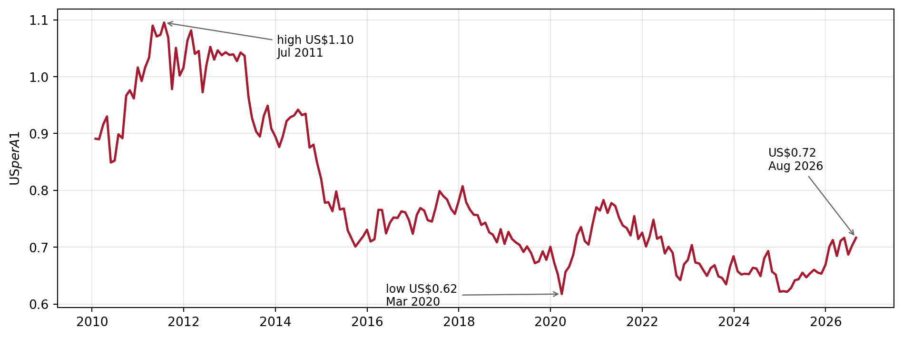
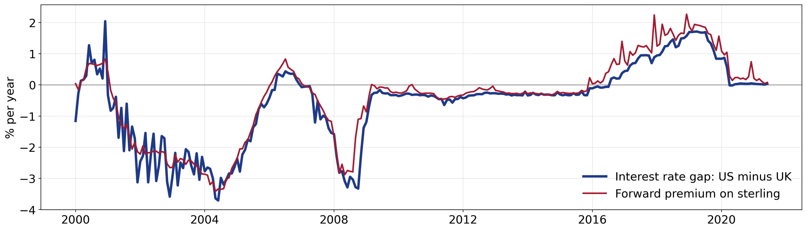

Banking and Financial Intermediation
Department of Applied Finance
2026-10-15
A bank can lose money even when every borrower pays on time.
| Risk | What goes wrong | A story |
|---|---|---|
| Foreign exchange (FX) | The exchange rate moves | Black Wednesday, 1992: George Soros reportedly made about US$1 billion betting against the pound |
| Sovereign | A government stops the payment | Greece, 2015: capital controls trapped money inside the country |
| Off-balance-sheet (OBS) | A promise comes due | AIG, 2008: the US government committed up to US$182 billion to rescue it |
| Part | Focus |
|---|---|
| 1. FX risk | Currency positions, parity conditions, and hedging |
| 2. Sovereign risk | When the government, not the borrower, is the problem |
| 3. OBS risk | Promises that stay off the balance sheet until they are called |
The thread running through today
The usual way to hedge FX risk is a derivative, and a derivative is an off-balance-sheet contract. Parts 1 and 3 are two sides of the same toolkit.
An exchange rate is the price of one currency in terms of another.
Two kinds of trade:

From its 2011 high to its 2020 low, the Australian dollar lost more than 40% against the US dollar.
Quick check
An Australian bank holds US-dollar loans. As the AUD falls, is it better or worse off in Australian dollars?
Better off. Each US dollar it is owed is now worth more Australian dollars. Holding US-dollar assets is a long US-dollar position.
\[ \text{Net exposure}_i = (\text{FX assets}_i - \text{FX liabilities}_i) + (\text{FX bought}_i - \text{FX sold}_i) \]
Only the net position matters. A bank with big foreign assets matched by equally big foreign liabilities has no FX risk in that currency.
| Net exposure | Foreign currency strengthens | Foreign currency weakens |
|---|---|---|
| Positive: long | Gain | Loss |
| Negative: short | Loss | Gain |
| Zero: matched | No change | No change |
Example
An Australian FI is long NZ$1,000,000. The rate moves from NZ$1 = A$0.92 to NZ$1 = A$0.94, so the NZD has strengthened.
\[\text{NZ}\$1{,}000{,}000 \times (0.94 - 0.92) = \text{A}\$20{,}000 \text{ gain}\]
Had the FI been short NZ$1,000,000, the same move would be an A$20,000 loss.
Positive exposure is long, negative is short. A move of \(-8\%\) means the foreign currency weakened by 8%.
pnl = expo * move / 100
line = Array.from({length: 41}, (_, i) => ({m: i - 20, v: expo * (i - 20) / 100}))
html`<div style="font-size:1.1em; margin-bottom:6px;">
${expo > 0 ? "Long" : expo < 0 ? "Short" : "Matched"} position:
<b style="color:${pnl >= 0 ? '#1a7f37' : '#A6192E'}">${pnl >= 0 ? "gain" : "loss"} of A$${Math.abs(pnl).toFixed(1)}m</b>
</div>`Plot.plot({
width: 620, height: 320, marginLeft: 55, marginBottom: 45,
x: {label: "Move in the foreign currency (%)", domain: [-20, 20], grid: true},
y: {label: "Gain / loss (A$m)", domain: [-20, 20], grid: true},
marks: [
Plot.ruleY([0], {stroke: "#999"}),
Plot.ruleX([0], {stroke: "#999"}),
Plot.line(line, {x: "m", y: "v", stroke: "#A6192E", strokeWidth: 2.5}),
Plot.dot([{m: move, v: pnl}], {x: "m", y: "v", r: 7, fill: "#A6192E"})
]
})The Week 5 idea, applied to currencies: daily earnings at risk (DEAR).
\[ \text{DEAR} = \text{Dollar value of position} \times 2.33\,\sigma \]
Example
An Australian FI holds €2.0 million, and €1 = A$1.25. The daily volatility of the exchange rate is \(\sigma = 0.5\%\).
On 99% of days, the FI should lose no more than about A$29,000 on this position.
By the Fisher equation, a nominal interest rate is a real rate plus inflation:
\[ R = r + \pi \]
With free capital movement, real rates tend to equalise across countries (\(r_{AU} = r_{US}\)). Then
\[ R_{AU} - R_{US} = \pi_{AU} - \pi_{US} \]
The interest rate gap between two countries mirrors their inflation gap. Exchange rates sit between the two, through two parity conditions:
| Condition | Links exchange rates to | Explains |
|---|---|---|
| Purchasing power parity (PPP) | Inflation | Where the spot rate drifts over years |
| Interest rate parity (IRP) | Interest rates | The forward rate today |
PPP rests on the law of one price: an identical good should cost the same everywhere, once prices are in the same currency.
| Candy in the US | Candy in Japan | Exchange rate at parity | |
|---|---|---|---|
| Before | US$1 | ¥100 | US$1 = ¥100 |
| After inflation in Japan | US$1 | ¥150 | US$1 = ¥150 |
At the old rate, US$1 buys only two-thirds of a candy in Japan. To restore the law of one price, the yen must depreciate to ¥150 per US dollar.
Tip
Higher inflation means a currency buys less, so it tends to depreciate. Price gaps drive trade, trade drives the demand for currencies, and demand moves the exchange rate.
Over a year, the percentage change in the exchange rate is approximately the inflation gap between the two countries:
\[ \frac{\Delta S_{\text{¥}/\$}}{S_{\text{¥}/\$}} \approx \pi_{JP} - \pi_{US} \]
\(S_{\text{¥}/\$}\) is the number of yen per US dollar. It rises when the yen depreciates.
Example: the candy again
\[ \frac{\Delta S_{\text{¥}/\$}}{100} \approx 0.05 - 0.02 = 0.03 \quad\Longrightarrow\quad \Delta S_{\text{¥}/\$} \approx 3 \]
The rate moves to about ¥103 per US dollar, so the yen depreciates by about 3%. Check with the candy: ¥105 / US$1.02 \(\approx\) ¥103, so it costs the same in both countries again.
PPP holds only roughly, and slowly.
The Big Mac Index
The Economist has compared Big Mac prices across countries since 1986. If a Big Mac costs A$8 in Sydney and US$5 in New York, PPP implies A$1 = US$0.625. Market exchange rates routinely sit far from the Big Mac rate, even for an identical burger.
Two risk-free ways to invest A$1 for one year must pay the same. Otherwise there is a free profit.
Blue boxes are in Australian dollars, pink boxes in euros. \(S = S_{AUD/EUR}\) and \(F = F_{AUD/EUR}\) are the spot and forward rates in Australian dollars per euro. Because \(F\) is agreed today, Strategy 2 carries no currency risk: this is covered interest rate parity.
Setting the two payoffs equal:
\[ 1 + r_d = \frac{(1 + r_f)\,F_{AUD/EUR}}{S_{AUD/EUR}} \quad\Longleftrightarrow\quad F_{AUD/EUR} = S_{AUD/EUR} \times \frac{1 + r_{AUD}}{1 + r_{EUR}} \]
The Australian interest rate is \(r_d = 5\%\), the euro rate is \(r_f = 10\%\), and today €1 = A$0.60, so \(S_{AUD/EUR} = 0.60\). What is the one-year forward rate? If the spot rate rises to \(S'_{AUD/EUR} = 0.65\), how much does the forward rate change?
Step 1: forward rate today
\[ F_{AUD/EUR} = 0.60 \times \frac{1.05}{1.10} \approx 0.5727 \]
The forward is €1 = A$0.5727, below spot: the higher-interest euro trades at a forward discount.
Step 2: forward rate after the spot rate rises
\[ F'_{AUD/EUR} = 0.65 \times \frac{1.05}{1.10} \approx 0.6205 \]
Step 3: the change
\[ \Delta F_{AUD/EUR} = \Delta S_{AUD/EUR} \times \frac{1.05}{1.10} = 0.05 \times \frac{1.05}{1.10} \approx 0.0477 \]
The forward rate moves in proportion to the spot rate.
IRP predicts that sterling’s forward premium against the US dollar, per year, matches the gap between US and UK interest rates:
\[ \frac{F_{USD/GBP} - S_{USD/GBP}}{S_{USD/GBP}} \approx r_{USD} - r_{GBP} \]

The two lines track each other closely: sterling trades at a forward discount when US rates are below UK rates, and at a premium when they are above. Gaps open in stress, such as late 2008, when banks scrambled for US dollars.
Hedging is not free insurance
On 15 January 2015 the Swiss National Bank abandoned its 1.20 EUR/CHF floor without warning, and the franc jumped about 30% against the euro within minutes. Stop-loss orders could not execute at their set prices; a UK FX broker became insolvent and the largest US retail FX broker needed a US$300 million rescue.
Recall Week 9’s wholesale funding: Australian banks raise a significant share of their funding by issuing bonds offshore, in foreign currencies. They hedge the currency risk with a cross-currency swap.
Over the life of the bond, the bank pays Australian dollars to the swap dealer and receives the US dollars it owes investors. It ends up with Australian-dollar funding, so a move in the AUD barely touches its balance sheet.
Important
The FX risk has not vanished. It has been swapped for counterparty risk, carried by a contract that sits off the balance sheet. That is Part 3.
The block can be capital controls, a foreign currency shortage, or sanctions.
So lending abroad needs two checks: the borrower, then the country.
| Repudiation | Restructuring | |
|---|---|---|
| What happens | The country cancels its foreign debt outright | The terms change: longer maturity, lower interest, smaller principal |
| How common | Rare, and mostly before World War II | The most common form today |
Greece’s 2012 restructuring cut private bondholders’ claims by 53.5%, reducing its debt by about €100 billion.
Restructuring took over because post-war lending came from banks rather than scattered bondholders, which made renegotiation easier. Neither is the same as debt forgiveness agreed by creditors, as under the IMF and World Bank HIPC Initiative, which has provided relief to 37 countries.
Argentina: nine defaults and counting
1827, 1890, 1951, 1956, 1982, 1989, 2001, 2014 and 2020. The 2001 default, on about US$82 billion owed to private creditors, was the largest in history at the time.
Banks use outside ratings (Euromoney, Institutional Investor, OECD) or build their own score from economic ratios.
| Ratio | Formula | A higher value means |
|---|---|---|
| Debt service ratio (TDSR) | (interest + principal repaid) / exports | more risk |
| Import ratio (IR) | imports / FX reserves | more risk |
| Investment ratio (INVR) | real investment / GDP | less risk, arguably |
| Export revenue variance (VAREX) | variance of export revenue | more risk |
| Money supply growth (MG) | change in money supply / money supply | more risk |
The logic is simple: exports earn the foreign currency; imports and debt payments spend it. A score combines the ratios into a probability of restructuring,
\[p = f(\text{TDSR}, \text{IR}, \text{INVR}, \text{VAREX}, \text{MG}, \dots)\]
OBS items are contingent: nothing on the balance sheet today, a real asset or liability if a trigger event happens.
Banks like them because they earn fees without using the balance sheet today. Historically that also meant less capital, fewer reserve requirements and lower deposit insurance costs.
Enron
Enron used hundreds of special purpose entities to keep billions of dollars of debt off its balance sheet. When they unwound in late 2001 it collapsed within weeks.
| Activity | The promise | It goes wrong when |
|---|---|---|
| Loan commitment | Lend up to a limit, later | Borrowers all draw at the worst moment |
| Letter of credit | Pay if the client does not | The client fails to perform |
| Derivative | Exchange cash flows in future | Markets move, or the counterparty defaults |
| When-issued trading | Deliver securities not yet issued | The bank’s allocation falls short |
| Loan sold with recourse | Take the loan back if it sours | The loan’s quality deteriorates |
A promise to lend up to a set amount, at a set rate, whenever the borrower asks.
Example
A one-year $10 million commitment, upfront fee 1/8%, back-end fee 1/4%. The firm draws $8 million.
The back-end fee pays the bank for keeping liquidity ready that the borrower did not use.
The Week 6 promised return, adjusted for the fact that only part of the commitment is drawn. You will use this in Workshop 10.
\[ \begin{aligned} 1+k &= 1+ \frac{f_1+f_2(1-td) + (BR+\phi)\, td}{td - b\times td\, (1-RR)} \\ &= 1+ \frac{0.00125+0.0025(0.25) + (0.14)(0.75)}{0.75 - 0.1\times 0.75 \times 0.9} \\ &= 1.1566 \end{aligned} \]
So \(k=15.66\%\).
| Risk | The problem |
|---|---|
| Interest rate | A fixed-rate commitment loses value if rates rise |
| Drawdown | The bank cannot know when, or how much, will be drawn |
| Credit | The borrower’s quality can fall before it draws |
| Aggregate funding | In a crisis, everyone draws at once |
Important
In March 2020, as COVID-19 hit, companies drew on their credit lines at the same time. The drawdown risk every bank had priced separately arrived all together. This is why the Week 8 LCR assumes part of every undrawn commitment is drawn in a stress.
A bank promises to pay on its client’s behalf.
Tip
A bank’s true risk in a crisis includes its OBS guarantees. The balance sheet does not show them, but stress reaches them first.
| Contract | Counterparty risk |
|---|---|
| Exchange-traded futures and options | Low: a clearing house stands between the parties |
| Forwards and swaps | Real: the other side may not pay |
AIG, 2008
AIG had written hundreds of billions of dollars of credit default swaps. When they turned against it, it could not meet the collateral calls, and the US government committed up to US$182 billion to rescue it.
When-issued trading
Banks bidding at an Australian Office of Financial Management (AOFM) tender for Australian Treasury Notes can sell their expected allocation forward, before the securities exist.
Risk: over-commitment. If the bank is allocated less than it sold, it must buy the gap in the market, possibly at a loss.
Loans sold
A bank makes a loan, then sells it to another investor.
One sentence to remember
The balance sheet shows what a bank looks like today. Its off-balance-sheet positions show what it could look like tomorrow.
AFIN8003 Banking and Financial Intermediation